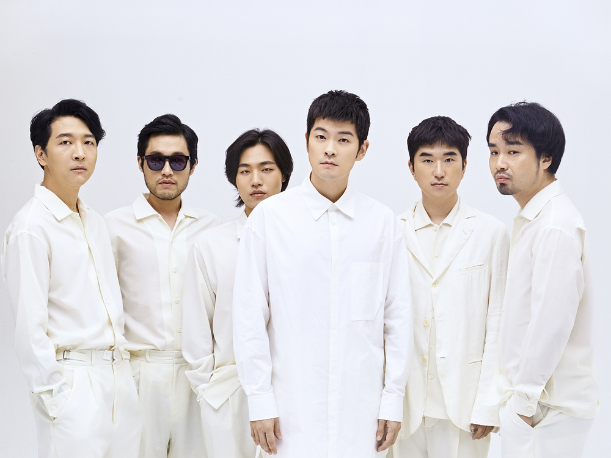

장기하와 얼굴들은 대한민국의 인디 록 밴드다.
2008년 3월에 결성된 밴드는 제 10회 쌈지 사운드 페스티벌 숨은 고수,
EBS 《스페이스 공감》 9월의 헬로루키에 선정되며 주목할 만한 신인으로 두각을 나타냈고,
흥겨운 리듬에 생활 밀착형 가사, 말하듯 노래하는 장기하 특유의 창법과 미미 시스터즈와 펼치는 퍼포먼스로 두드러진 색깔을 보여주었다.
2018년 11월 1일 5집 발표 이후 12월 31일 부로 공식 해체를 선언했다.